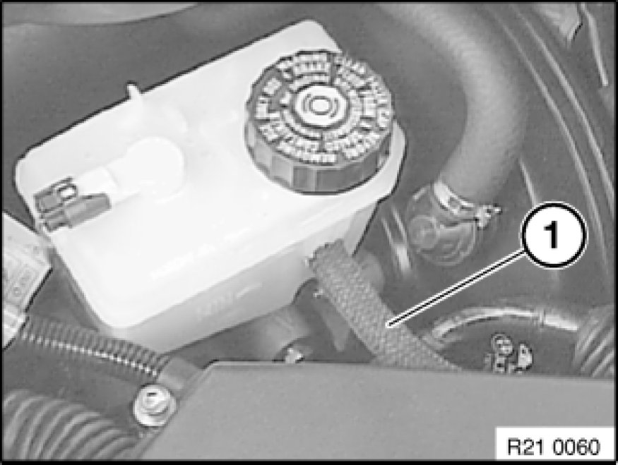
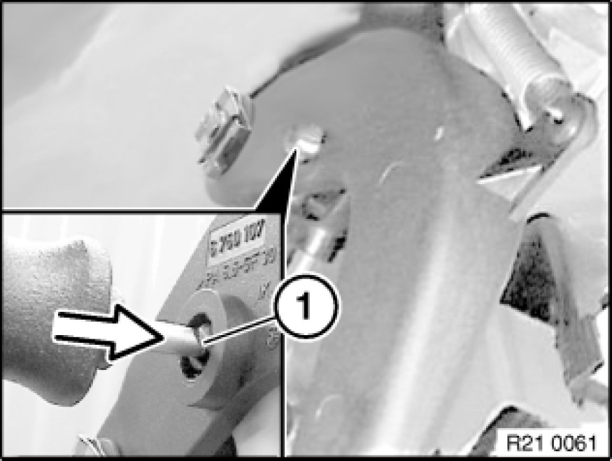
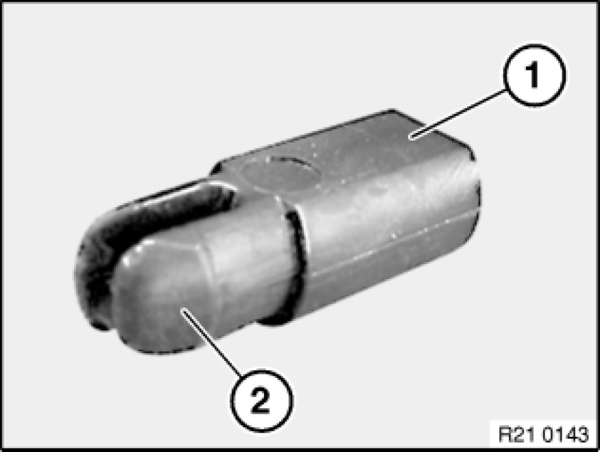
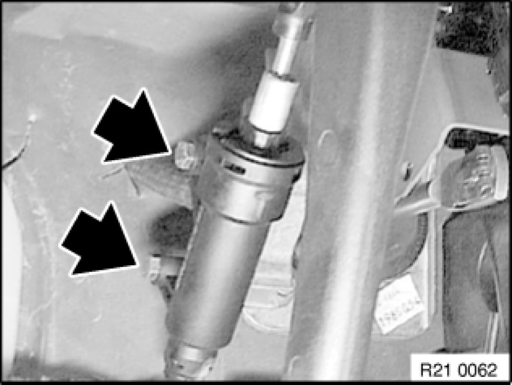
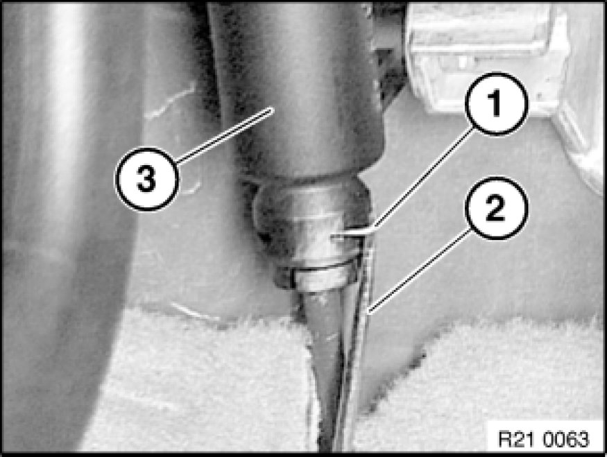
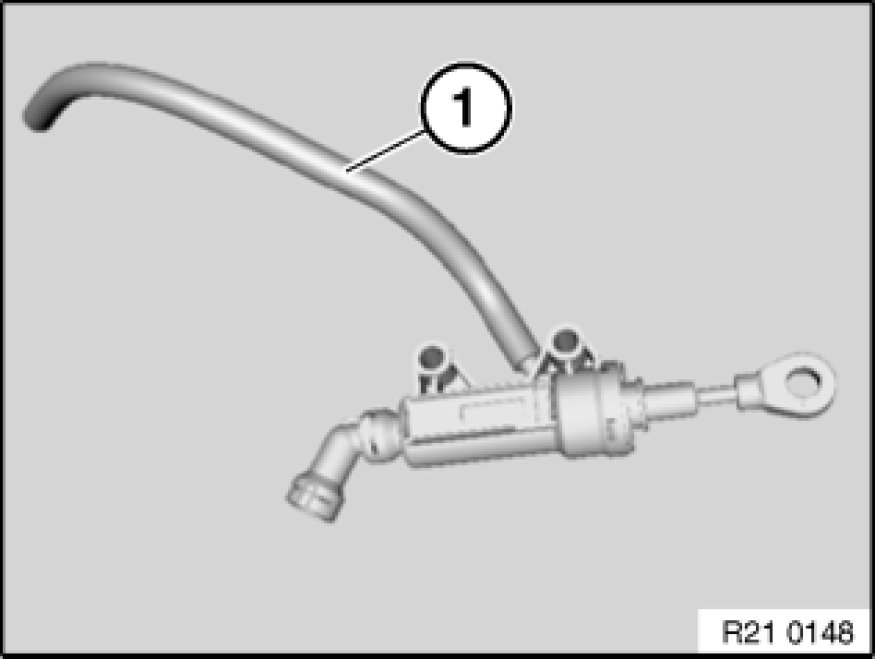
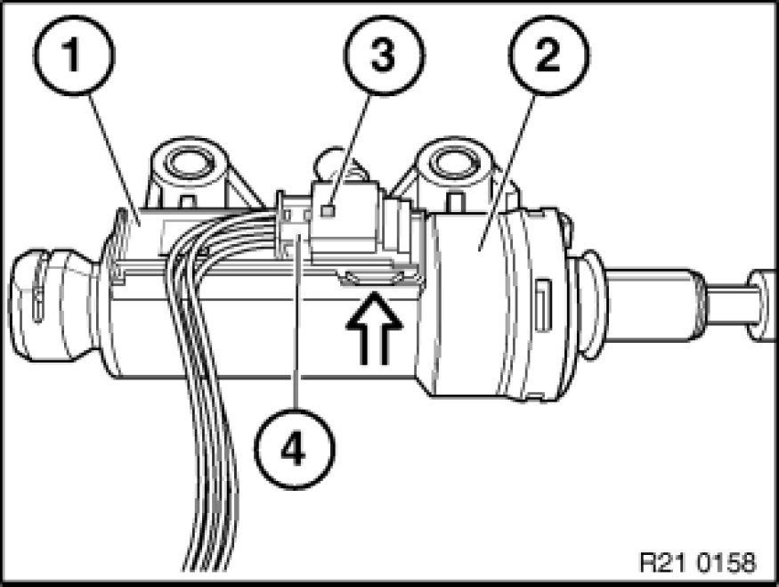
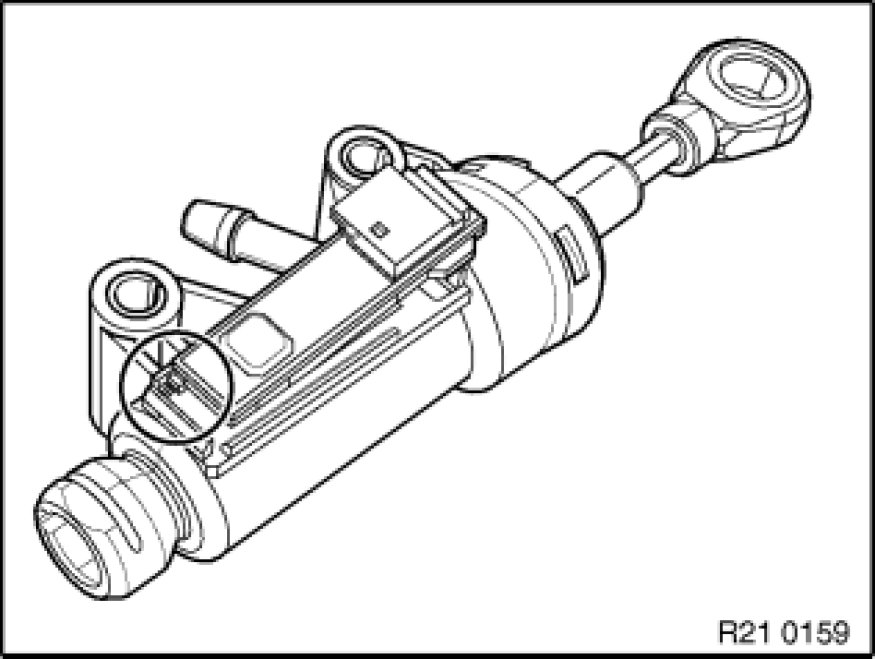

Clutch Master Cylinder: Service and Repair
21 52 500 - Removing and installing/replacing clutch master cylinder

Note:
After completing work, bleed clutch hydraulic system Service and Repair.

Necessary preliminary tasks:
- Remove trim panel 51 45 185 Removing and Installing/Replacing Panel For Pedals for pedal assembly.

Draw off brake fluid up to supply hose of clutch hydraulic system (1). For this purpose, use only a vacuum pipe that is exclusively used for removing brake fluid.
Detach supply hose (1) from expansion tank.

Press pin (1) out of clutch pedal with a short screwdriver.

Installation Note:
The pin is coded by a straight surface (1).
The coding points upwards.
Screw pin with coding upwards. Turn slightly until coding snaps into place. Press in pin until engaged (2).

Unfasten screws.
Tightening torque 21 52 2AZ [1][2]Clutch Hydraulic System.

Detach retainer (1) with a screwdriver (2).
Note:
Do not foul carpet with brake fluid.
Detach hydraulic line from clutch master cylinder.

Detach supply hose (1) from clutch master cylinder and remove clutch master cylinder.
Important!
Do not pull supply hose completely into interior.

Lever out shift element (1) from clutch master cylinder (2) with screwdriver.
Release plug connection (3) and disconnect plug (4) from shift element (1).

Installation Note:
Shift element is secured against incorrect installation.
Shift element must snap audibly into place.